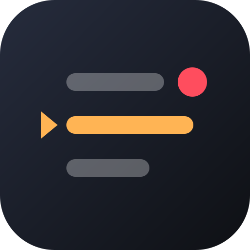

Prompteur Créateurs
Votre texte défile, vous restez naturel.
Script sélectionné
Aucun script
Tout reste sur votre appareil : aucun texte, image ou son n'est envoyé sur Internet.

Votre texte défile, vous restez naturel.
Aucun script
Tout reste sur votre appareil : aucun texte, image ou son n'est envoyé sur Internet.
Aucun script pour l'instant. Créez-en un ou importez un fichier texte ou PDF.
Astuce : un passage entre crochets, [comme ceci], s'affiche en couleur atténuée pendant la lecture. Pratique pour les indications : [pause], [sourire], [montrer le produit].